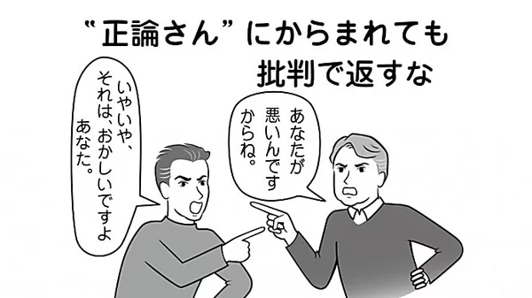

バイデン氏は記者も驚く“衰え”ぶり。躍進のブダジェッジ氏も歓声はトランプ氏の3分の1

もちろん、予備選挙は6月までと長く、誰が生き残るのかは現時点では不透明だ。ブダジェッジ、サンダースの両陣営は、草の根選挙に長けている。しかし、アイオワ州は人口が少なく、白人が9割以上という人種構成だ。今後アフリカ系アメリカ人やヒスパニックが多い州の予備選挙も続く。
コンサル会社ヴェラ社長で元ホワイトハウス上級職モー・ヴェラ氏はこう話す。
「候補者が、女性、アフリカ系、ヒスパニック、同性愛者、若者など全てのグループに強いということが明らかになれば、自ずと決まってくる」
一方、今回の党員集会は、今後の選挙システムに暗い影を落とした。
党員集会直前の2月1日、地元紙デモイン・レジスターとCNNは、1944年から続いていた世論調査結果の発表をキャンセルした。ロボットコールではなく、調査員が直接有権者に話を聞く同調査で、調査員がブダジェッジ氏の名前を有権者に聞くのを忘れていたことが発覚したためだ。
また、アイオワ州民主党の集計システムにバグがあり、当日夜中までに判明する結果が大幅に遅れ、6日現在も100％集計されていない。今後49もの州である予備選挙と11月の本選挙がどうなるのか、不安が増す。
実はアイオワ州で、事実上の共和党指名候補であるトランプ大統領の集会にも行った。会場が大きかったためもあるが、民主党候補で一番多かったブダジェッジ氏の2千人を大きく超えて7600人が集まった。トランプ氏は、こう切り出した。
「この前に行ったミシガン州は、繁栄している。シンゾー（安倍首相）に言った。工場をもっとつくるべきだ。彼はやるだろう」
その後は、「民主党は左翼」「メディアはフェイクニュース」とまくしたてた。人々の絶叫で、トランプ氏の声がかき消されることもあった。規模、熱狂度、演説の長さのすべてで、民主党候補の集会をはるかに上回っていた。
トランプ氏という仮想敵が決まっているにもかかわらず、決定的な候補者像が見えない民主党は、果たして11月に勝てるのだろうか。（ジャーナリスト・津山恵子＝アイオワ州デモイン）
※AERA 2020年2月17日号より抜粋
- エリカさま「女優復帰の資格ない」 事務所がクビを切らない本当の理由 (02/05)
- 「結婚15年、好きな男性ができました」混乱する39歳女性に、鴻上尚史が示した“苦しくて険しい”3つの道 (11/19)
-  あなたは大丈夫？ 相手を打ち負かす“正論症候群”の予防策 (01/28)
- 今年踏ん張らないとクビも… もう後がない“崖っぷち”の選手たち (01/24)
- 河井夫妻と自民党の大誤算「黒川検事長の定年延長は効果なかった…」 (03/05)
- Promoted 裏庭に巨大な穴を掘った男性、近所から羨望のまなざしを向けられる (04/19) PostFun
- 内田也哉子、17歳のとき夫・本木雅弘に買ってもらったコム・デ・ギャルソンに母を見た (10/11)
- 男子校出身の18歳に鴻上尚史が教えた「絶対に選んではいけないサークルとバイト」とは？ (03/10)
- 本当に歌のうまいアイドルは誰だったのか 聖子、あやや、AKB48は？ (11/12)
- Promoted 快適なのに省エネ、さらに企業ブランド向上も実現 (12/31) 三菱電機株式会社
- Promoted 比べてみると明らかに！世にも奇妙な生き物の実物サイズとは (12/20) japacrunch
- Promoted 大人は「英語81文」暗記すればいい！通訳になった女性の勉強法 (12/31) ウェンズデー

 アメリカ大統領選が派手な「政治ショー」になる理由と...
アメリカ大統領選が派手な「政治ショー」になる理由と...(11/07) dot.
 テレビ討論は“ヒラリー勝利”なのに「トランプ大統領...
テレビ討論は“ヒラリー勝利”なのに「トランプ大統領...(10/04) AERA
- ドナルド・グローヴァー、米大統領選の民主党候補アン...
(12/19) Billboard JAPAN
- 米大統領選「劣勢」トランプ氏の新選挙参謀は「危険な...
(08/31) AERA
- 米大統領選「トランプもクリントンも金まみれ」有権者...
(03/08) AERA
- 「降板」相次いだ2019年 ピンチを救った「奇跡の代役」たち (12/16)
- 間違って来日しちゃった助っ人とも契約… “超ゆるゆる”だった昔のプロ野球 (03/03)
- 木下優樹菜の芸能活動自粛でわかった 本当の“芸能界いい夫婦”の名前 (11/21)
- 木村拓哉を「あんた」と呼ぶ鈴木京香「恋の予感」が不安 (11/18)
- Promoted 台所用洗剤でお風呂を洗った結果が凄い (11/12) 「ティップアンドトリック」
- Promoted 釣り人達が氷山の上で発見した”あるもの”に開いた口が塞がらない (04/03) PostFun
- 有力33私大を七つの指標で分析 (10/18)
- Promoted 世界各地で見つかった巨大すぎる動物達 (11/29) japacrunch
- 【写真特集】山梨・小1女児行方不明 現場のキャンプ場へ (10/04)
- 24年ぶりの俳優業復帰 後藤久美子フォトギャラリー (12/23)
- 鈴木おさむ「ある女性タレントの顔が…」整形手術が“麻痺”する感覚 (11/21)
- “あざとい女”吉岡里帆 アンチを黙らせた演技力と美貌 (02/26)
- Promoted 美人すぎる三つ子！DNAテストで分かった衝撃的な結果とは (11/06) PostFun
- Promoted DNAテストで分かった衝撃的な事実！美人すぎる三つ子に隠された衝撃の事実とは？ (11/06) japacrunch
- 巨人には行きません！ 球界の盟主を「振った男たち」列伝 (12/14)
- Promoted 血圧130以上は要注意？手軽に出来る血圧対策とは (12/31) エーザイ